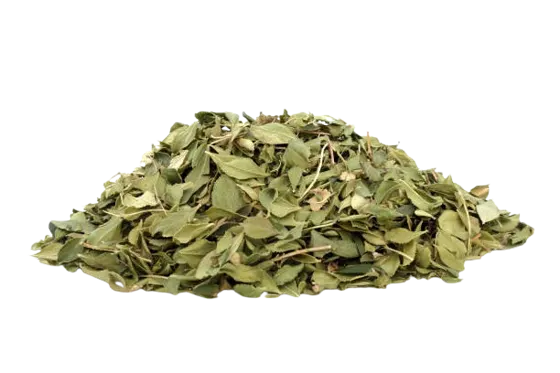

Oil Grimoire
Buchu Essential Oil
Buchu Essential Oil is the steam-distilled oil of Agathosma betulina.
Extraction & Characteristics
Source: Dried leaves of Agathosma betulina
Method: Steam distillation
Note: Top to Middle
Scent: A dark yellowy-brown oil with a penetrating, minty-camphoraceous aroma over a soft blackcurrant top.
Constituents: Diosphenol (25 to 40 percent), with limonene, menthone, and other minor components.
Safety
Not for home aromatherapy. The toxicity of buchu oil is not fully established, but its high diosphenol content and the toxic pulegone profile of its close cousin B. crenulata both raise serious questions. Until clearer safety data is available, the oil is treated as questionable and should not be used in home aromatherapy or skincare.
Avoid entirely during pregnancy. People wanting buchu's traditional urinary benefits should work with the dried leaves (as tea, tincture, or pharmaceutical preparation) under the guidance of a qualified herbalist, never the essential oil.
Where You Will Encounter It
- A signature blackcurrant note in fine fragrance and chypre perfume bases.
- A flavour ingredient in colognes and certain alcoholic beverages.
- Tinctures, extracts, and oleoresins for pharmaceutical use, especially in genito-urinary preparations.